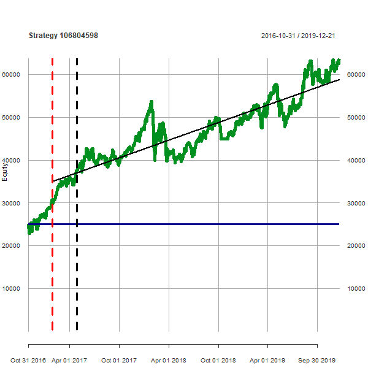
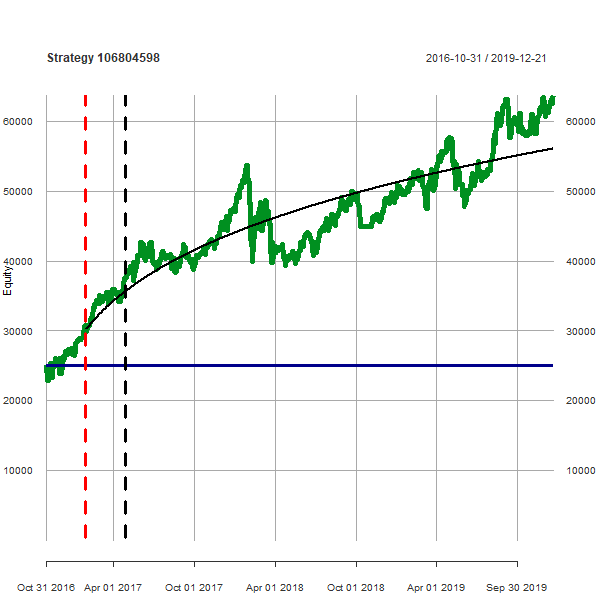
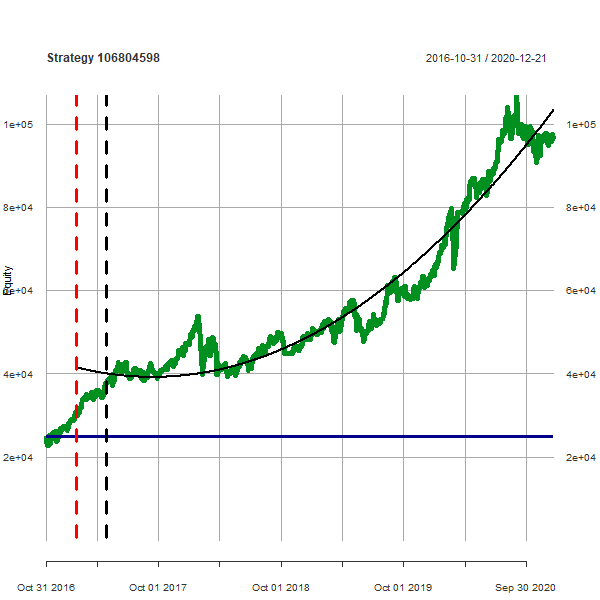
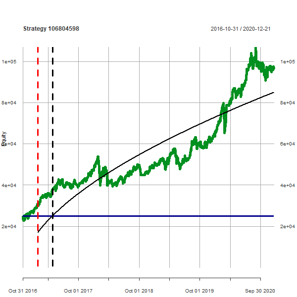
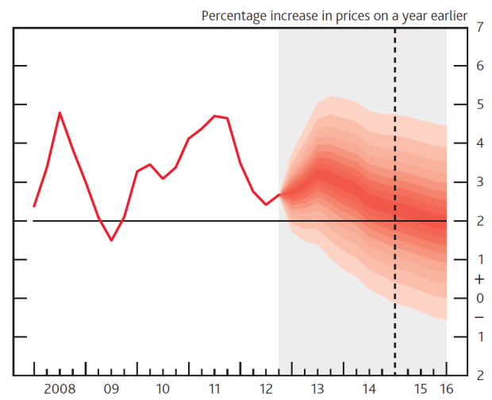

Based on my previous work ( description ), I want to propose the following score and smart portfolio algorithm.
A basic strategies selection is by Profit/MaxDD ratio.
Then:
Calculate 3 regression functions: linear, quadratic polynomial and power functions.
Select the best of those regression functions. (By residuals stats.)
If it is linear, determine if it goes up. If it is nonlinear, determine if it is convex or concave. Perhaps ALL three must go up.
If we have a good regression function, make PREDICTIONS for next D days, where is D something between a week and a month.
Predictions are generated for some confidence levels. Say for 85%, 90% nad 95% confidence levels.
Convert predicted values to percents of the current equity of the strategy.
Select X (five?) strategies with best predicted percents results. (May be other criteria too.)
That selection is our new Smart Portfolio. (Selections can be made in each confidence level. We will have 3 possible portfolios with different probabilities.)
We will make historical backtests of this algorithm: we predict portfolios and compare their predicted results with actual results which happened D days later.
If it will work, we can add strategies selections by other criteria like age, number of trades or needed capital.
Then, we can try to find regression functions for shortest possible (youngest) strategies. How: regression functions have some parameters. Those parameters have some confidence levels (or somethig like that - learning needed). We can try to find parameters values which have yet sense for youngest possible strategies. (Measured by something like t-test or F-statistic.)
We still need to identify a danger, martingale/scaling strategies. On this "score level" and also (ideally) in real-time after each trade too. Send an e-mail to the user if a strategy invests too much of its capital to one or two specific symbols.
Linear regression ending on 2019-12-21:

Quadratic polynome ending on 2019-12-21:
Power function ending on 2019-12-21:

Linear regression ending a year later on 2020-12-21 (just for regression illustration):
Quadratic polynome ending a year later on 2020-12-21 (just for regression illustration):

Power function ending a year later on 2020-12-21 (just for regression illustration):

Predictions may look like this (a picture from internet):
